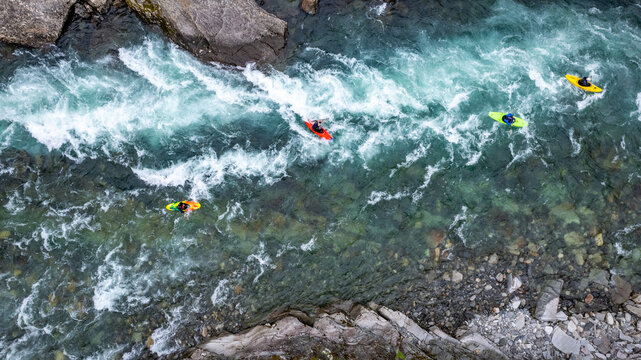
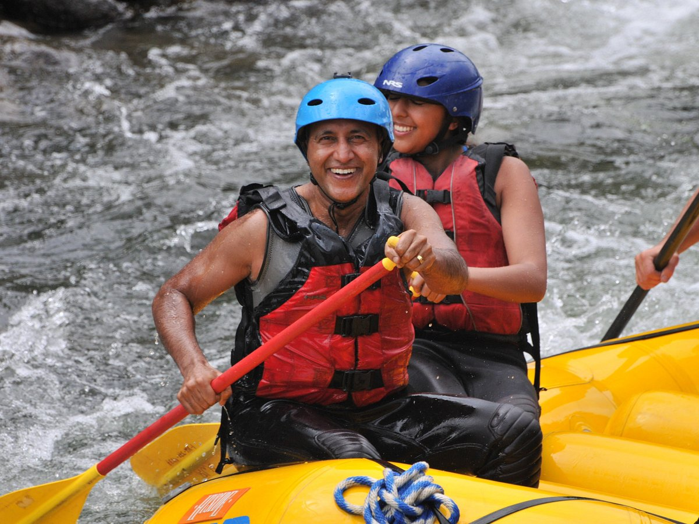
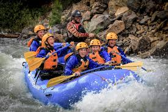

Welcome to River Runners Rafting Co., your ultimate destination for thrilling white water adventures! Nestled in the heart of breathtaking landscapes, we offer exhilarating rafting experiences for all skill levels. Whether you’re a seasoned pro or a first-time rafter, our expert guides are here to ensure you navigate the rapids safely while soaking in the stunning views and wildlife around you. Get ready for heart-pounding excitement and unforgettable memories on the water!


River Runners Rafting Co.
History
River Runners Rafting Co. was founded in 1998 by a group of passionate outdoor enthusiasts who shared a love for adventure and a deep respect for nature. Inspired by the stunning rivers and rugged landscapes of the region, our founders set out to create a company that not only offered thrilling white water experiences but also fostered a sense of environmental stewardship. Over the years, we’ve grown from a small local operation into a well-respected name in the rafting community, welcoming adventurers from all over the world to experience the beauty of our rivers.
Throughout our history, River Runners Rafting Co. has remained dedicated to providing safe, exhilarating adventures while preserving the natural environment we cherish. Our experienced guides, many of whom have been with us since the beginning, bring a wealth of knowledge and passion to every trip. As we celebrate over two decades of service, we continue to innovate and improve our offerings, ensuring that every journey down the river is filled with excitement, education, and lasting memories. Join us as we honor our past while looking forward to many more adventures on the water!